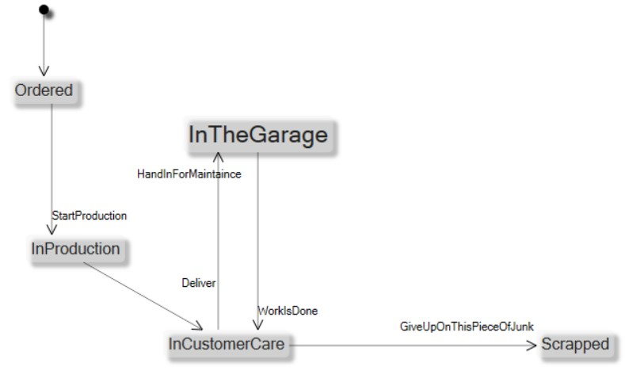
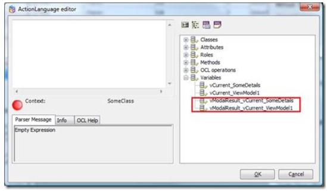
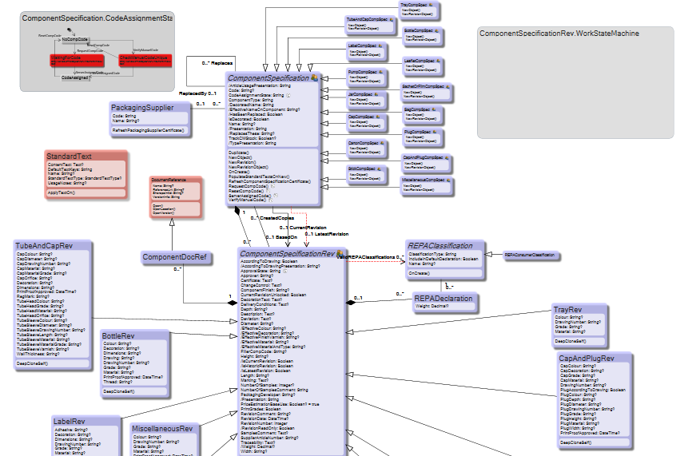
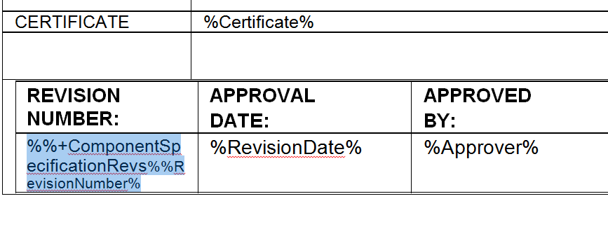

MDriven The Book
Doing effective Business – by taking control of Information
Hans Karlsen, Stockholm, Sweden 2016-01-23Part 1. Intro
What is MDriven
MDriven is software modeling, prototyping and execution made easy. You do not need to know Java or c# to fully test your ideas for advanced information handling. You just need to learn how to model and you will get instant gratification. If you already know c# or Java you will be amazed on how quickly you can verify your ideas with MDriven compared to alternative prototyping schemes.
Furthermore MDriven can take you all the way to a finished system – in the cloud or on your server – with web based user interface or/and with a rich client application.
MDriven uses full-fledged relational databases as information storage and will scale with your needs.
MDriven is totally transparent in architecture and you will never lose control of your data.
With MDriven you can continuously progress systems easily making you truly agile.
MDriven is like having a software developer made of software – that does what you say really fast.
If you used to use excel to handle information, MDriven will strike as much more type safe, precise and efficient way to get things done fast and to have things stay done.
If you used to write requirements for software with text, images and mockups, MDriven can change the way you interact with stakeholders and developers – removing a lot of confusion and speeding up the process.
Modeling will make you think further and faster about information.
MDriven is free to use for up to 50 information classes – enough for even non trivial systems.
Introduction
As I have been working as a software developer and software architect in Sweden for the last 20 years I have seen a lot. I am not going to bore you with my historic reflections at all.
That was my first attempt on an introduction for this book. Then I came to realize that most things we have done with MDriven is very much anchored in the historic reflections of things we have experienced in the past. So I guess what I need to say is more like this: Having worked many years as a software architect I have seen a lot of things that change – but also very much that sort of stays the same over time – a stable core.
What is the stable core? The need to store and retrieve the information we are dealing with. The need to somehow display it for users and handle users need to update it according to the rules we want to enforce. This is the technology of any application or system and is what every system developer needs to deliver – using technology modern at the time of implementation. I will refer to this as system modernity.
Furthermore we have the need to understand the business information in the system and how the rules that governs the information’s evolution and consistency protection works. This part I will refer to as the system gist.
On the other hand we all know that in order to make our software sell – to an external market or to in-house users - it must be perceived as modern and cool, but in the software business modern and cool change every year or so, at least on the surface.
So mixing the system gist down into a format that is modern now but that will be obsolete in a couple of years seems like something one should avoid.
It would be better if the system gist somehow could be separated from the currently modern implementation strategy – which we know for sure will be less modern as time goes by.
This book is on how I suggest that we deal with system gist and system modernity.
Praise to UML
UML from Wikipedia: “The Unified Modeling Language (UML) is a general-purpose modeling language in the field of software engineering, which is designed to provide a standard way to visualize the design of a system.
It was created and developed by Grady Booch, Ivar Jacobson and James Rumbaugh at Rational Software during 1994–95, with further development led by them through 1996.”
To fully convey my appreciation for UML I must explain how I look on the world.
Below I define three areas that will help to explain my reasoning.
Fashion: fashion is what goes together with what and if it is hot and sexy in the manner that people somehow crave it without further need to understand it.
Modernity: I attribute modernity to ways to solve known problems. Tools and strategies have a modernity aspect. A more modern tool is not necessarily better – but it often is since the new tool has had the advantage of creation in a world that has more knowledge than the world that created the old tool
System gist: a system in this context is anything that combines a series of ideas and actions in order to produce value. The gist of the system is the system description stripped from everything that is either fashion or modernity as described above.
Let me exemplify these definitions. A car manufacturer is very much reliant on fashion. How the lines of the car body appeals to the target audience is very important but almost totally based on feelings and soft aspects that are hard to measure. The modernity aspect of car manufacturing is important for the manufacturing process. What tools to use. How to apply industrial robots. What third party systems to include like anti-lock braking and airbags. The system gist is captured in the design phase of the car construction process. It involves all the inherited knowledge about what is important for cars in general and also some new things that are important for this car model in particular.
Second example: A surgeon. Modernity provides important tools to diagnose a patient, like MRI. It also provides ever better tools in fixing what is wrong, like with minimally invasive surgery. System gist is for the surgeon the knowledge on what and where to cut and how and why organs act as they do. It is important for a surgeon to be able to draw the intuitive line between gist and modernity. Having the latest tools will not be enough if you are not educated in what to look for and how to act
upon what you find. As a patient you will want a surgeon that masters both gist and modernity, and does not neglect one for the benefit of the other. When it comes to fashion it is important for the plastic surgeons – but they too must have the main focus on gist and modernity or you will end up with a defect system. I know little about the field of surgery but I am sure that if I knew more I would also see aspects of fashion in appendix removal procedures. It might be how hi to cut and how to stitch the wound that has no immediate support in current science but feels right or looks good.
Where is the software industry in this spectrum? The software industry differs from the two examples given by not having ONE fixed or slow evolving system gist. Software industry is actually about producing new systems and as such new areas that have gist, modernity and fashion of their own. The software industry is one Meta level up compared to surgery or car manufacturing. It is in this way not just a human activity like surgery but an activity of activities. This is what makes software development a field that will leave no other area of human activity untouched.
Hundreds of new unique software systems are finalized every day and they will resemble each other when it comes to modernity and fashion. What makes them each unique is mostly their system gist.
Look at what all the apps on mobile devices share: their execution environment, their use of the network, the interaction patterns and widgets. Modernity and fashion is a time marker that makes it easy to guess the time of construction for a particular software system.
The modernity aspect of software development is very important to be able to produce a well behaving system. The fashion aspect of system development is very important to attract users and make the system intuitive to use. These two areas, reused over and over, also evolve at a rather high pace. Refined strategies – or as I call them – modernity aspects - on how to build software systems is a topic discussed endlessly in the developer community.
It is easy for software developers to completely get lost in the modernity aspects. As they do they will leave less room in their minds for system gist. When we get software developers that move cross field and mostly work with modernity and fashion, is anyone taking care of the gist?
What sets one software system apart from another is mainly its gist not its modernity.
UML is all about system gist. This is why we need UML or something that solves the same problems. We use UML to describe system gist in an easy, clear and partly visual format without any possibility for alternate interpretations. UML is the most prominent way to handle system gist.
For a software engineer it is important to be able to quickly place arguments on design decisions in the correct category. If it is about system gist then there will be facts to research in the domain of the system in order to make the best decisions. Is it about modernity – then it is important to analyze best practices from the development communities and consider the pace and gain of change to see which path to take. Is it about fashion – stand back and let the end users or market decide. Take a vote if they do not reach a consensus.
Just as software frameworks – like Entity Framework, Hibernate or the like, aims to help developers with modernity issues there are manufacturers of generic software systems that aim to solve everything. These are Meta systems where you somehow can describe your system gist and then you would be done.
Since a meta system like this is a holy grail – the search for it engage many software companies. Of course many claims are made that the grail is found. But is it really? And is there really such a thing as the holy grail in the first place?
SharePoint is a tool that I have seen used like this on a number of occasions. As SharePoint may have an appealing modernity and may be fashionable in certain populations it is an easy sell if it also lends itself to handle ANY system gist.
As SharePoint is a software system it has a system gist of its own. One that may be described with UML.
As you see the gist of SharePoint is tiny. In fact the gist of a Meta systems often are tiny.
Alan Turing thought us in 1936 that one can build universal machines – a machine that can simulate all other machines. Universality of machines is reached very fast as Stephen Wolfram showed us in his book “A new kind of science (NKS)”-2002 where he suggest that a cellular automate of only two state and three colors is universal. Alex Smith later proved this in 2007.
In light of this it is not surprising that the system gist of SharePoint is Universal – so it can be used to implement any and all systems conceivable. This may seem fantastic – but just because something is possible does not necessarily make it a good idea. It may for example be possible to build anything by gluing grains of sands together under a microscope – but not practical or economical defensible.
Folding down the system gist into ListDefinitions in SharePoint is not the best way to treat the gist. In that format it is not easily evolved and maintained. It is however possible, I do not question that.
My opinion is that the best way currently available to describe system gist is UML using the language of the domain. Refrain from building Meta systems.
Accept that each area of human activity has its own gist that deserves its own UML description. When each area has its own gist clearly described in UML it is easy to maintain and evolve. Free from modernity and fashion issues.
I wish all developers would be aware of the three different areas of gist, modernity and fashion. It is my belief that we limit our ability to develop everything due to lack of focus and lack of discussion on system gist. Having a language for the gist opens up for discussions and thinking that helps development in all areas of human activity.
What if UML was forbidden?
If UML or other structured ways to define system gist was forbidden – what would happen then. Maybe UML need not be forbidden – the effect would be the same if UML simply was not used.
Well the system gist still exists – even if it is not explicitly documented. It must be extractable from the source code of any running system since the system is a transformation of the system gist any how that gist was captured in the first place.
Maybe the system gist is held in documents that outline requirements or prose text that describe scenarios that the system should solve or support with. Maybe the developers were obligated to write other prose documents that act as the documentation of the produced software.
To document software is boring compared to coding for any developer. Code can be compiled and type checked so that bugs in it can be removed. Code can also be executed and further tested to ensure that the idea we wanted to cover really is covered. Documentation does not work that way.
Most likely any existing documentation is filled with bugs beyond belief since the process of verifying lacks compilation and testing. Since developers suspect this, developers seldom trust and seldom consult documentation for existing software systems. Instead they have a tendency to go to code. If the only option is prose documents they are probably correct. Even if the developer finds information in the code – it is important to remember that the code is just the original developer’s interpretation of the requirement – and this need not be equal to the requirement. Software tools and libraries may follow other rules – but when an experienced developer is confronted with a software system he or she very seldom expect that the documentation is complete or correct.
Prose documentation of system-gist is by the reasons stated above almost never used for anything except making the stakeholders feel a bit safe – like life jackets on an airliner – that fly over land – it was never intended to help anyone – but the stakeholders want it so we provide it.
Another way I have come across to protect and keep the knowhow that is the system gist is what I would describe as “invest in the team”.
Let the skilled and motivated software developers solve things with their talent and memory. Let the collective team memory be your knowhow and documentation of the system gist.
This is the common way for most businesses that produce software that I have come across. I argue that this is not a strategy. It is an abdication of ownership and control. Developers might not see this as a problem at first since they take pride in the trust management place in them.
Still I have seen many cases where this strategy over the years create a chasm between the ones that know (developers) and the ones that make decisions (management) – it usually ends with a collapse that benefits no one. Since developers now are left on their own to decide where the resources should go – into system gist or into modernity or maybe into fashion. They will soon lose the managements trust since management lacks control and does not understand why the developers chose to prioritize the way they do.
Nevertheless this is commonly how small and midsized businesses handle their software investments today. Let the code speak for itself – there is no other representation of the ideas within the software than the code itself. The very same code that is strongly flavored by the team members take on what is modern and what is fashionable this year – or was – last year.
Luckily UML is NOT forbidden
For prose document writers and for nothing but code cowboys there is a missing link – a way to describe system gist separated from the flavor of the year implementation method in a format that is not as flimsy and open to interpretation as prose documents.
What I propose here and what many has proposed before me is that we can document with models. The models are more descriptive than prose text and leave less room for alternate interpretations. At the same time models are less complex and easier to read than code written in the flavor and style of the year.
The model is then home of the system gist. Here it can be understood, discussed, criticized and evolved long before it has taken the expensive form of implementation code.
What is somewhat new in what I say is that Models can be compiled and executed just like code. We can then focus on using the currently modern technique to execute the model. This way the modeled solution can have a much longer lifespan than the user interface or delivery method that are heavily subjected to modernity and fashion.
Models can cover the uniqueness and true solution of your software.
A model executer brings your model to life in a specific environment. When one model executer goes out of style and something new is requested by the market – we do not rewrite the system gist – we create a new model executer – and feed it the very same model.
MDriven is the latest model executer we have done – but we have been involved in doing many. A model that was executed with Delphi 1999 (BoldSoft) can be executed with c# MVC5 or with WPF (CapableObjects) today. It was executed with Windows Forms in 2003 (Borland, Embarcadero), with Silverlight in 2007, with ASP.NET in 2005. No doubt will there be new model executers when modernity so requires – and sure enough MDriven Turnkey that brings any system gist to AngularJS is currently available.
One key to a good investment in software is to avoid entangling things that change for different reasons and with different intervals and speed. Your system gist change and evolve along with the business it supports. The modernity of the solution changes by market forces no one can control but everyone must adapt to.
I propose that we should keep these two areas apart so that they do not get confused as being the one and same problem.
Model driven development is by me defined as: develop system gist in its own machine readable format. Build a software machine that turns the system gist into a complete software system and fulfills the required modernity aspects. Giving such a machine a descriptive name: ModernGistExecuter – we at CapableObjects call our implementation MDriven Framework.
What is not to like?
Having worked with model driven development for the last 20 years I have many times been surprised on how much resistance we have met. It is not like other developers are indifferent or do not care. Many do care – but the reactions are surprisingly often skeptical and negative.
We have tried to take this as an indication that we are on to something relevant and beautiful. Big and disruptive shifts never come without agony and pain. The suggestion is that it is a defense mechanism that kicks in. People are afraid that model driven development will change their current set up – and resistance to change is natural and triggers unconsciously.
I do not believe in the anti-change theory. I think it is a simple case of not correctly separating the different issues at hand: modernity versus gist.
Developers know that everything changes. Experienced developers have been left stranded with abandoned techniques and products thru out their careers. It is not a good feeling and it is not good for business or the credibility of the developers. No one likes to be forced into change by external influence, but a product that has lost new development and support must be replaced. This has led most developers into a minimalistic approach when it comes to using products. Minimalistic or gigantic – trust only the really big companies in software like Microsoft or Oracle – and things that are transparent like open source and simple tools.
The problem with traditional development that blends and mixes modernity with system gist is that change hits so hard. Everything must be rewritten once a technology change is required. If the gist changes a lot – rewrite, if the modernity changes a lot – rewrite, if the fashion changes heavily – rewrite. There are more reasons to abandon made investments than what any investor dare to think about. All this because of the mix up of the three different areas.
If we separate the gist from modernity we will find that most changes in technology leave the gist untouched. In fact all different types of gist will be handled by many different approaches and technologies over its lifetime. For this we can plan from the start.
Since few have had the opportunity to try this in real life, few know the benefits it brings.
Separating the gist from modernity protects that part of the system from the IT-wind-of-change that is always blowing at hurricane strength. At the same time free up the modernity area to change without having to change all the gist stuff at the same time. Both areas will win by keeping this separation.
As an information architect or developer of domain work organization, the gist is the most interesting area. It is the theory and motive. This is also were the structural capital of the enterprise resides. Having this documented in a useful and actively maintained format is very attractive to any business.
For classic software architecture Modernity is extremely important as it ties into the projected lifespan of the system, maintainability, how hard it is to build, usability concerns, security, efficiency and overall investment sanity like “our maintenance burden must not be to disparate”. However for a business wanting to build in house systems in order to become more automated the modernity aspect is still important but they should put system gist in the front seat. It will be good for the whole business to structure their knowledge of whom they are and how they do things.
I agree that if you use no tools to manage your gist it is easier to just mix gist and modernity together and let it stew. Then sit back and wait for the inevitable rewrite need that forces you do it all again. I propose that this is the wrong approach and an approach that is not very smart or efficient.
Looking back on many discussions over the years I now believe that a lot of developers and software architects do not separate the system gist area from modernity with enough clarity. Many software developers also focus mainly on modernity issues – after all as a professional developer this is what you can reuse for different clients that all have different gist. I believe that this limits their ability to produce robust long term systems. I suspect that this is part of the explanation why software development has to low success rate. It can also explain why legacy ERP systems that are so far from modernity that it hurts still have an appeal on the industry.
It is my belief that we must be vigilant to correctly identify modernity and fashion arguments when solving system gist problems. If not, people will wrongfully let modernity or fashion arguments color their gist and by doing so confuse both other developers and stakeholders.
This book is primarily on how to use MDriven to handle and manage gist and secondary on how to use MDriven to help you manage modernity. I will show how the modernity issues are managed with standard techniques in Visual Studio with no limitations or assumptions – so that you are ready for all new modernity requirements that will be sailing up. Lastly this book will cover how the gist and modernity offered by MDriven Framework easily is dressed up with the current fashion.
What is next
I propose and will show examples of how you can maintain the gist and idea of your software in a model – and a how you can apply existing or create your own model execution engines to act as modern and current delivery mechanisms for your solutions.
The steady pace of shifts in the markets perceptions on what is new and cool often paralyze companies from building support systems and with them control their information. The main problem is that most techniques today mix the two different problems of system gist and modernity. Entangling these two problems makes solving them as one hard and risky and something that many businesses will avoid.
To summarize: Model centric – describe the system gist in a model that use a model executer of correct modernity level to bring it to life. The model is then the documentation, the knowhow and the gist of the system– invest heavily in this. Put modernity and fashion in the model executer and into user interface and delivery –invest in this too but keep in mind it may change soon. Make sure you involve management in the system gist governance so that they are in control and can take informed decisions.
The series of tools and strategies presented here reduce the effort needed for business to take control of and own their information. It does so by introducing a clear separation between system gist and modernity.
It is my belief that companies that own and control their information are better equipped to compete than companies that are clueless to it. A no brainer of course – but still – most companies lack a good and deep understanding of their information. The few that have control often spend too much resource trying to evolve system gist and modernity in one complex and risky process.
It is the aim of the tools and strategies presented in this book to show new ways to produce and maintain domain specific software support systems – and to vastly reduce the costs and increase the quality and speed on how to produce and maintain them. It is not magic – it is just a matter of raising the abstraction level a bit and refrain from entangling problems that are much better solved separately.
Part 2. Design
Information design
I claim that for understanding a business you should understand its information – what they deal with – the information they create while they produce their product. Others may argue that the processes are the most important part – but I differ – if you first know the information you know – or can figure out - what processes must be present that creates this information. If you just know the processes you still do not really know the information.
As a software architect you can use the phrase “follow the information” in the same sense as detectives of crime use “follow the money”. You will find the truth this way.
When you follow information it is easy for all to see if it is valuable information or not, but when following processes you track work that is performed currently. Suppose you found an unneeded process step – how will you know that it is unneeded? You cannot get a correct answer from the ones performing it now – since they are biased that it is important - and no one else will have enough information to really know.
If you first learn the important information you can easily see what the process step at hand does to that information. It should evolve the information in some way. If it does not create or change information in a valuable way the process step is unnecessary – for this business at least.
The information
There are many ways to describe Information. My recommendation is UML – the Unified Modeling Language. UML contains a few set of rules – and it lets you describe everything you need without further need for interpretation. UML is the core defining the models available in MDriven. This book will use UML extensively.
Short introduction to UML– class diagram
UML class diagram is the preferred way to describe the statics of information.
A UML class diagram shows classes and their relations.
A Class differs from an Object. The Object is of a Class. The Class may have many instance objects each being of the Class. “Instance” and “object” are treated as interchangeable in this document – they both mean an object instance of a class.
Class can be regarded as the “Concept” of something. Like if I have class named “Car” – it is likely to symbolize the fact that there are Cars and Car is a concept that exists and that there are probably instance objects of this class as “my car”, “your car” and the car with license plate ABC.
A class typically has attributes. One attribute of Car might be License plate number. Attributes must have types. Typical types are string, integer, double, Boolean and datetime.
This means that once we have objects of class Car – these objects will have a place to store the License plate number of that particular car.
Classes typically has relations to other classes (relation, association, link are sort of synonyms and can be used interchangeably)
A relation has two endpoints. An endpoint has a name. When you read a class diagram and your eye follow a relation you should use the name on the far side of the relation. So in this example I would say: “There is the concept of Car. Cars have LicensePlate strings. Cars also point out the BrandOfTheCar with a Name”.
If I was talking about brand – looking on the model from another direction: “There is the concept of Brand. Brand has a name. Brands also have Cars of the brand that in turn has LicensePlates”.
Relation endpoints also have Cardinality. Cardinality is a rule that describes how many instances there can be in the relation endpoint. The cardinality marking of star (*) means “unlimited”. Valid cardinality markings are: 0..1 (zero or one instance allowed), 1 (must always have 1 instance), y..x or x where y and x is any number or x is star (*).
This was the basics of UML – there are more of course – but this is what you need to get started.
How do I know if it is correct?
The classes we have defined above – along with their attributes and associations – constitute a model.
A model is always a model of something. A model is simplified version of the reality concepts that you model. The model should have a purpose. The validity of the model comes from if it fulfills its purpose or not.
There is no universal right or wrong – it all depends on what your needs are.
I could just as well have said that the Brand was an attribute of Car.

I chose not to since I do not want to have the brand “Plymouth” repeated 10 million times, once on each and every “Plymouth” (if there are 10 million Plymouth car objects).
Instead I rather just see “Plymouth” typed in once – in the brand class name property (property and attribute are essentially synonyms). This pattern – to classify attributes as being concepts of their own I refer to as the value store pattern. The Brand class is the ValueStore of brands and at most 1 brand tags each Car instance.
For me – in this situation – this is better – but it is not more correct:
The process of modeling is a process of describing the important things. As you model you will have classes that represent physical objects, like Car, but also abstract things like Brand. This is perfectly normal.
This way of describing information does not dictate that you follow the language of the domain you are modeling or not. In principle you could have named the class Car for “A” and the class Brand for “B”. You could then document someplace else that A is actually Car and B is actually Brand.
You may think that this was a very silly example. Still thousands of system implementations use that strategy. Sometimes it is due to some limitation of the implementation tools and sometimes it is an ambition to make the resulting system more generic.
Think of SAP for example – they may call a class “Part” – and document someplace else that for a particular system instance Part means either a gear or a frame or a saddle.
So if the will to make systems more generic makes your model less readable and more abstract than your reality is –is there an alternative?
The alternative is called Domain Driven Design (or DDD for short) – Eric Evans defined this in the book Domain-Driven Design . In short it stipulates that you should use the language of the domain you are modeling. This way you – the modeler – and the people working in the domain – get a ubiquitous language and as a result you understand each other better. In turn this makes it much easier to build software systems.
My experience is that being as close as possible to the language used by the domain is beneficial to everyone. It makes everything much clearer and easier. Most information architects has done this long before it was given the name DDD.
Association classes
Associations define relationship between Classes. Whenever you need some additional information on that relationship an association class will come in handy.
Model 1:
Even if the Association class is mostly used for many to many relationships, you can just as well use them on association of any cardinality.
Model 2:
OR-mapping (the process of taking an object oriented model (a standard UML class diagram) and transform it to a relational database schema (tables, fields, primary and foreign keys) ) will turn this model into three tables; one to store Person, one to store Flight and one to store Booking.
If you had not used the association class, OR-mapping would still create three tables due to the many to many association. The third table would store two foreign keys, one to identify the Person and one to identify the Flight. The third table will implicitly be named, if you did not explicitly give it a name, to PersonFlight or FlightPerson. This table the DB-guys often refer to as a link table.
The funny thing is that modeling another way will give the exact same OR-Mapping result:
Model 3:
This will also end up in the database as three tables where Booking points out Person and Flight with one foreign key for each. So for a DB-centric-guy this is the same… To an OO-Guy this is NOT the same.
What is the difference
The rules that association classes adhere to in any well behaving MDD framework are these:
- 1. Lifetime control; the booking cannot be explicitly created. It is created as a consequence of associating a Person with a Flight: aPerson.Flights.Add(aFlight). And it is destroyed automatically whenever the association is removed: aPerson.Flights.Remove(aFlight)
- 2. Uniqueness; In UML one instance must be unique in the relation, you cannot add one person to a flight twice. This way the use of the association class has effectively given the UML reader the information that a person can only be one passenger at a time and not two.
So whenever you see the need for lifetime control and uniqueness you should use the association class. It will help the reader and it will help the developer.
Inheritance
UML inheritance is different from “I get your stuff when you die”. It is also different from “Oh look that kid really looks like her Mother”.
UML inheritance is this: “A child class has all attributes and associations that a parent class has, and the child also has attributes and/or associations of its own that the parent does not have”. In other words UML inheritance is “specialization” and “generalization”; a child class is a “specialized” version of the parent, and a parent is a more “generalized” definition of the child class.
UML inheritance is the same as OO-inheritance (Object oriented inheritance).
UML inheritance will allow you to inherit the properties of multiple parents – but very few OO-languages allow for, so called, multiple inheritance (c++ does, c# and Java does not, and since we focus on the latter languages we do not support it either), so I will not mention multiple inheritance again. This means that a class can only have one parent class (or no parent class of course, but never many parents).
An example
Fruit is pretty generic class. If we think of specializations of fruit we will find apple, orange, pear, banana, pineapple etc.
The lines ending with the big arrow is called a Generalization-association, meaning that if you follow it you get something more generalized of the class that you leave. If you follow it in the other direction you get the opposite of generalization, namely specialization. You will notice in MDriven Designer that when you add a generalization association, the class’s superclass is updated in the object inspector.
Superclass is a more correct UML term than “Parent class”. Instead of “Child class” the correct UML terminology is Subclass. Therefore, I will use Super- and Subclass from now and on.
Why is inheritance useful?
The obvious benefit of inheritance is the ability to introduce common properties that all fruit have in one place. If there are properties that all fruit have they will go into the Fruit class rather than defining them over and over in the subclasses.
The true power of inheritance is that it resembles how people reason and think. As humans we always generalize. Our language and communication depends on it. This fact is the reason for some bad things in society – prejudice where we jump to conclusions based on earlier experience or hearsay, and some good things – that we instantly know how to use a door knob even if we have never seen that particular type of door knob before.
Polymorphism
Polymorphism is a fancy word for an important concept: poly==many, morph==shape => many shapes. In our example we use polymorphism in the association from country to fruit; namely a resulting list that can contain different subclasses of fruit – apples and oranges etc.
Polymorphism allows us to operate on stuff we do not really know that much about. Check this out:
I add a method on fruit that I make virtual:
I can implement this to return a default value on Fruit and override it on the subclasses that should return a different value:
public partial class Fruit { public virtual bool HasSeedsYouNoticeWhenYouEat() { return true; } } public partial class Banana { public override bool HasSeedsYouNoticeWhenYouEat() { return false; } } So having this I can write code that go over a list of Fruit and ask if the fruit HasSeedsThatYouNoticeWhenYouEat like this:
List crapfruit = new List(); List okfruit = new List(); foreach (Fruit fruit in malaysia.ExportsTheseFruits) { if (fruit.HasSeedsYouNoticeWhenYouEat()) crapfruit.Add(fruit); else okfruit.Add(fruit); } I also want to mention the concept of “Abstract”. When we have a model like the one above you should really think of the Fruit class as being abstract – meaning that having an instance of a fruit (a real fruit) that is just of type Fruit should not be legal. A fruit-instance must be one of the subclasses; it can be an Apple, Pear, Orange, Banana or PineApple (in our model) but never just “Fruit”. Because Fruit is an abstraction.
In Object orientation terms Abstract means that the compiler will treat any attempt to create an instance as an error. It is an error because the developer that defined the class never intended it for direct use; it was designed as an abstraction or generalization of a set of subclasses.
My recommendation is to always treat classes that has subclasses (aka is a superclass) as being abstract. In the Fruit sample above this might be obvious, but remember this when you classify your domain where it might not be so obvious.
Composite and Aggregate and what they imply
Associations between classes are easy enough to understand; Car has 4 wheels
But in the information system we build it may be obvious that a Car owns all its Wheels; the car and all its wheels can be looked at as a complete entity of its own - a composite. If the Car is scrapped, the wheels are also implicitly thrown away. A Composite in UML is created by decorating the association with a filled diamond:
For any well behaving MDD tool this decoration should imply a cascading delete of all associated wheels when the Car is deleted.
A composite also signals to the UML reader that the Car and Wheels are created at the same time, and that they may not be meaningful on their own. So some will argue that the model should be changed from “0..1 Car” to “1 Car” (i.e wheel must always belong to exactly one car):
On the other hand this might not be the best idea for just the domain we are modeling now. If the system we build is one that describes a garbage sorting facility we may want to say: “Yes a car often has wheels, and the car and its wheels can be looked as an entity of its own (a composite), but we sometimes want to take this composite apart and treat the parts separated”. If this is the case the aggregate decoration can be used:
The aggregation symbol signals to the UML reader that the connection between Car and Wheel is “strong and common” and that “Car owns wheels” is more appropriate to the domain than “Wheel owns Car” (this also applies to the composite symbol) .
A well behaving MDD tool should probably prohibit the deletion of a Car until the Wheels are gone.
So that the scrap yard guys does not delete a car while the valuable wheels are still on it.
To sum it up: Composite is stronger than Aggregate; both symbols imply that the domain sometimes look on the classes as a bigger unit. The symbols help the UML reader to understand the larger compositions in the domain. The symbols imply specific destruction behavior to good behaving model driven development frameworks (MDD-Frameworks).
To sum it up:
Each Association end in MDriven has the “Delete Action” property:

The DeleteAction can be set to one of these values:
| DeleteAction on the Wheels association | Calling Car.AsIObject().Delete() |
| Allow | will work even if you have wheels left on the car, but the wheels will be left dangling |
| Prohibit | will not work as long as you have wheels on the car |
| Cascade | will delete any remaining wheels |
| <Default> | If the association end is Composite treat as Cascade, if the association end is Aggregate treat as Prohibit, if the association end has no aggregation treat as Allow |
The recommendation is to leave the DeleteAction on <Default> and use the Aggregation setting to control the delete action AND help UML readers to understand the domain.
Derived attributes & associations
Derived attributes is an important concept of MDriven. To a SQL-guy derived attributes resemble calculated fields. Derived attributes are just like calculated fields that subscribe to all the values that it is calculated from. So whenever data, seen by the expression, is changed the derived attribute is marked as out of date. The next time you or your UI tries to read it, the attribute is re-evaluated.
The key thing with derived attributes is that it is NOT calculated each time you access the attribute. If it were performance would suffer. It is calculated (or derived) as few times as theoretical possibly; only when read the first time after a change of anything that the derivation expression looks at.
The concept of derivation relies on the concept of subscription – everything in your domain layer has the ability to signal whenever it is changed (the publisher pattern), and subscribers subscribe to publishers to detect these changes. Although this is a different story I must mention that publishing events to catch changes is a key difference between the MDriven approach to implementing a domain layer and the POCO way (plain old c#-objects) like NHibernate and some other frameworks use.
Having a model as the one above I can create a derived attribute on the Order that calculates the total shipping cost by checking the products ordered and the customer’s country in OCL:
self.OrderItems->FilterOnType(ProductThatNeedsShipping).Weight->sum * self.Customer.Country.CostToShipHerePerKilogramdo this by creating a new Attribute, set the AttributeMode to Derived and fill in the DerivationOCL.
Derived attributes can be used in other derivation expressions so I can make a derived TotalCost without repeating the definition of the Shipping cost:
self.OrderItems.Product.Price->Sum() + self.ShippingCostDerived attributes are efficient and always return the correct up to date result. Associations can also be derived the same way as attributes.
In the example model above the Shipping cost is out of date if you add a new orderline, if you change the customer, if the customer changes country, if an already picked ProductThatNeedsShipping gets an updated weight etc – it covers every and any change that effects the calculation as long as that change is part of your domain layer.
I hope that you see the positive effect this will have on your UI implementations – Showing the ShippingCost and see it update as you change anything it depends on by one central definition in the system gist far away from the UI where we rely on modernity and fashion.
Using derived attributes and derived associations clean up your code and consolidates central definitions to single points and thus greatly reduce maintenance costs and efforts. Having the definition in OCL also makes the derivation a part of the documentation – the model – rather than just the implementation.
UML – State machines
If the classes of your model define the statics we are now left with dealing with the dynamics of the domain. With the dynamics I mean all the “state” and “rules” that any instance object defined by a class in your model might have.
This is where UML introduce the State Machine. A state machine helps us to describe the different allowed states an object can be in and how it is transitioned between these states.
For the Car class in the model I choose to model the state machine above.
Each box is a State. A state has a name. A state can have transitions moving into it or out from it. To initiate a transition out of a state and land in another state we must use a trigger. A trigger is a method of the class that performs all actions associated with moving from one state to another. In order to be allowed to execute a trigger we must first be in an action where this trigger can be used.
State machines can make the dynamics of the information in your model much more accessible. Having the rules that the state machine implies also remove the need for a lot of other means to make sure that the information does not end up in illegal states.
The current state is stored in the attribute named state in this case. But a class can have multiple state attributes (named differently) – just as objects in real world follow different state machines depending on perspective. The perspective I have chosen above might be called LifeTimeState. And maybe there is another state attribute called CleanlinessState.
You can implement many business rules in state machines like these. Consider that your domain has a rule “Do not start production until deposit is paid”. I would go about it like this:
and a Guard on the state machine:
The language used to declare the guard is called OCL – Object Constraint Language . It is a languages that allows you to navigate your model. So you can easily make more complex rules. Consider that the Brand must be set before we start production:
“self.DepositPaid and self.TheBrandOfTheCar->notEmpty”OCL makes heavy use your model and the rule is just as clear as your model is – using the language of the domain.
You can also define Entry and Exit actions that execute when you enter one state and leave another.
Like this:
Constraints
There are other ways to introduce business rules in the model than using state machines and guards. You can also use constraints. The model already has a lot of implicit constraints from the cardinalities of the association ends. Like if you have cardinality of 1..4 and you have zero objects in that relation – then you have a broken constraint.
But you may also define your own constraints:
You can choose if a broken constraint (a constraint that evaluates to false) should be treated as Information, Warning or an Error to the user.
You can also define the constraint as being a delete constraint only:
This way we have explained at the model level that the domain does not consider it to be ok to delete a Car-object as long as we have the deposit – unless it is in state Scrapped.
The delete constraints will be checked when the object is Deleted by MDriven – as a result of the Delete operator is executed on the object.
Other things that are checked when the Delete operator is run are the BusinessDeleteRules that exists on all association endpoints:
We as modelers should decide what the best rule is for each association end. In this case – is it ok to delete a Brand if there are Cars left in the AllCarsOfThisBrand association? No I think not. I am setting it to “MustBeEmpty”.
The association in the other direct on the other hand
I set that to “NeedNotBeEmptyNoWarning” – because deleting a car-object is ok even if it has a brand.
Part 3. ViewModels the declarative way
The ViewModel
It is a common problem that User Interface (UI) code gets filled with business logic that does not belong there. The logic is often left there as a quick fix and the developer has every intention to someday return and clean it all up by refactoring the code so that business rules are handle by the model and the UI only handles the user interaction. This actually never happens. I have never seen a team that has enough room in their schedule to go back and redo work that to the client is already done, delivered and paid for.
Every developer knows that the degrees of freedom rapidly decrease once you fill your UI with business logic:
- You cannot easily reuse the logic placed in a UI so you copy it and increase the maintenance (BAD!)
- You forget about rules placed in UI so your system gets a life of its own (BAD!)
- Once you have logic in the UI you cannot be expected to know it all so you get afraid to make changes to your system because something will or may break (BAD!)
- You dare not give the UI to that brilliant designer because the designer will break logic for sure (BAD!)
Still I see business logic in the UI everywhere I go. When I ask about it I always get answers like: “Well this is not finished yet”, or “Well this is really special stuff, only used in one place”, or “Yea I know it sucks, I will fix that later”. But “Later” never comes, does it? It will always be just “Later”.
I am no superman for sure. I see business logic in UI code I have written myself too.
If everyone or at least most of us is getting into these situations could it be that we are doing things the wrong way? Could it be that doing things the right way is just a tad bit too complicated?
These are some strategies to make developers do the correct thing and actually follow the coding guidelines:
- Automated review tools like FXCop
- Adhere very strictly to ModelView patterns as MVVC or MVC – but still you need to verify that you follow the pattern
- Peer review (that usually will be done “later”)
- Some other strategy that will force violators (you and me) to mend our ways – even if the correct way is really complicated (maniac team leader with rabies foam in the face)
- Make it easier and faster to follow the “coding guidelines” then to be quick and dirty.
To no surprise I am in favor of making things easier. To be able to make things easier we need to understand what cause things to go wrong in the first place: Why is the UI filling up with business logic? I think there are a couple of reasons, depending on how far you are from being model driven some of these reasons will apply:
- The UI will need to transform data (could be business logic) in order to display it according to specification.
- Actions performed in UI act on selections from UI-components, that has data in the transformed presentation format, and need to be transformed back (could be business logic) to model-scope in order to let the model work on the data (business logic). You also need to check that the parameters sent to the model method are valid (could be business logic).
- The existing business logic may not match 100% what your action should do, you may want to call two, three of more methods to get the job done (new business logic) and you want to do some small checks based on the results of each method (could be business logic).
- Validation – your UI will do a lot of small checks to see that the data fulfills the overall rules for your application (business logic)
How do we make these reasons go away?
- We do it by offering a good and easy way to transform model-elements (or data if you will) into data elements suitable for render to match the specification.
- We do it by making it real easy to add business logic where it belongs (in the model), and make it easy to call it.
- We offer a clean and easy way to add validation logic.
By setting the model in focus, and making it dirt simple to add methods, derived attributes and derived associations you can do everything you need for a specific UI in the model. This is an improvement even if not the solution.
The problem is that if you have a 100 UI’s your model is filled with 100 times x derived attributes and derived links. That does not sound like a good thing to me. It will eventually get hard to see the trees for the forest in a model like that.
Further more when a UI is dropped and deleted for some reason, will we remember to drop the derived associations and derived attributes we added to the model to accommodate it? Probably not.
A transformation layer between the UI and the Model can fix this. The transformation layer is allowed to have business logic, as long as it is unique for the context it works on. If the logic is not unique, it should go in the model ready to be re-used. We call this transformation Layer for a ViewModel. The name View-Model is from this being a particular view or perspective in how to look at the model. The perspective often correlates to UI-views.
A ViewModel transforms a piece of the model for a specific purpose. The purpose is often, but not always, to prepare the model information for interaction with a user for a specific use case – a UI. I said often but not always; it can also be for creating data transfer objects that are suitable for exposure for another application or system, or for some reporting engine or the like.
Why is it having the rules in a ViewModel is much better than having them in the UI? There are a lot of reasons:
- Testing; it is a good thing to be able to test the logic separated from the UI, because it is awkward and error prone to test and read the results back from the UI.
- ViewModel re-use ; you may have different UI’s for the exact same use case (beginner/advanced, Web-api/Rich client etc).
- Design time type checking; most UI-binding strategies rely on using strings that can only be checked at runtime (true for winforms and ASP.NET – MVC with Razor is type checked and also WPF), whereas a good ViewModel is type checked at design or compile time.
- When important logic is in the ViewModel the designers can work on the UI without risking any damage to the logic.
- If we have dedicated designers we will not want to wait for them to release a UI file in order to fix business logic within.
- The UI may be on the other side of a network (another physical tier) so the UI cannot have access to the domain layer tier.
- UI and logic have very different motivators and hence will often change for different reasons (looking good versus working correctly), mixing them up adds confusion regarding the distinction between these important aspects.
- Security, designer that get access to the ViewModel cannot go beyond the ViewModel and unintentionally expose information that should not get exposed in the use case at hand.
The thing is that you do not have to use a ViewModel pattern to create a great application, it is just that is a good idea to use the ViewModel pattern when building applications that are going to be worked on for a long time, released in several versions over several iterations, and will most likely see different developers and UI-designer, and may very well be radically changed with regards to presentation framework during its lifespan. In short – it is always a good idea for successful applications to use a ViewModel pattern.
The declarative ViewModel
Presented with a model that I got from colleague, that incidentally helps out as a Hockey Referee when he is not coding, I wanted to create a ViewModel for the use-case “Set up new Hockey game”.
The Game class has a state machine:
I took a piece of paper and draw the UI I wanted to achieve:
Now I know what the requirements are on the ViewModel since I can see from the drawing what data the ViewModel needs to hold.
And then created this ViewModel That I named GameSetup:
Notice that it is just a series of named ocl expressions. Some expressions are nested to other list definitions like Home_PickList that states that if the Game has a picked GameType, then we know what teams that can be picked – namely those teams that are associated to that GameType
I created some test data so that UI can show something. My first attempt was to manually code a WPF UI and bind the values to the ViewModel
The UI looks like this:
This has minimal amount of fashion acceptable styling. The good thing is that you can hand it to any WPF savvy designer in the world – the data and the rules are safe in the ViewModel.
It already shows some of the good effects of separating UI from logic.
- The PickLists for Home and Visitor are filtered based on Type of Game
- The Picklist for Home team filters away the Visitor team if set (and vice versa)
- Start game is enabled only after both home and visitor are set
- The End game button is disabled until the Game is started
These are some examples of business logic that would have easily ended up in the UI if we did not have a good place to define it.
Taking it further still
If the cost of creating and maintaining a ViewModel is high fewer ViewModels will be created. So our mission is to reduce the cost of creating and maintaining them.
WPF is a declarative way to describe the UI. This mean that the same basic lookless components like TextBlock, TextBox, CheckBox, Combobox and Image etc will be used again and again and they will be given a look by an external style or template.
What if we use this fact and provide some basic rendering/placing hints for the ViewModel columns? We could then use those clues to spill out the correct lookless control in the intended relative position so we would not need to mess about with xaml every 5 minutes. This is what the ViewModel-Editor looks like without rendering hints:
And this is the way it looks when I have checked the “Use Placing Hints” checkbox:
Given the extra fields for “Presentation”, “Column”,”Row”,”Span” etc I can work the ViewModel – preview to look like this:
Now I really need to stress this so that I do not get misunderstood: We are not designing the presentation here at all. We are describing what data is available, which values are valid, possible selection lists of data, and, if the UI designer wishes to take notice of it, *hints* as to how to arrange the controls in relation to each other which happens to give the option of generating the user-interface automatically by whatever front end is currently in fashion. This is all natural information we have in mind while designing the ViewModel.
Having a ViewModel with placing hints, you can add a ViewModelWPFUserControl to your form with just one row:
<ecoVM:ViewModelWPFUserControl Grid.Row=”2″ x:Name=”VMU1″ EcoSpaceType=”{x:Type ecospace:WPFBindingEcoSpace}” ViewModelName=”GameSetup” ></ecoVM:ViewModelWPFUserControl> And the result is:
And remember that these auto layout controls also adheres to external set styles.
Having the ability to get simple UI automatically derived from the ViewModel placing hints lowers the effort to produce and maintain. Experience has shown that a lot of the administrative parts of your application is left as automated so that more time can be spent on the signature screens that are most important for your users.
Part 4. Actions
What an Action can do
Actions can do a couple of things.
ExecuteExpression
The execute expression is an Action-Language expression that is rooted in some context.
For GlobalActions this context is null, so what you can do is limited to expressions that stem from a class of your model, like X.allinstances or X.Create. The ActionLanguage-editor (Action language is OCL but can also change data) is displayed by the button next to the expression:
If the Action is a ContextAction, you get access to the variables that the context define, these are named as vCurrent_TheViewModelClassName. So you can either act on classes as with GlobalActions or act on the current value of variables from the context. The variables follow the selections that the users do in ViewModel grids, so you can act on things the user has selected.
When you have an object context like this you can call methods that the objects class define:
And you can of course use all the attributes and navigate all the associations in as many steps as you need to get the desired effect.
If the action is a ClassAction the action is rooted in an object of that class, and you use the OCL identifier “self” to operate on this.
EnableExpression
The EnableExpression is very similar to the ExecuteExpression, except it is not an EAL expression, it is an OCL Expression. As such it cannot have side effects (it cannot change anything in your domain of objects). And the EnableExpression must also evaluate to a boolean value of true or false.
Except from these differences the expression operate on the same context and can reach the same variables etc as described for the ExecuteExpression.
The EnableExpression is used to control when an action should be executable or not.
Consider that you have a state machine on the class X and you only want the Delete action to be enabled when X is in state Deletable : self.oclIsInState(#Deletable)
BringUpViewModel & ViewModelRootObjectExpression
An action can bring up a ViewModel defined UI, and when it does it will assign the Root object of the viewmodel the result of the ViewModelRootObjectExpression. If the ViewModel RootObject Expression is empty the Root object of the brought up ViewModel defined UI will be unassigned – and this might be perfectly fine for certain types of UI’s, like UI’s designed to seek persistent storage for example.
ViewModelIsModal & ExpressionAfterModalOk
If the action is set to bring up a ViewModel powered UI, you may also choose to bring that UI up as a Modal window (a dialog you need to Ok or Cancel to get away from). The model executer runtime will add an OK and Cancel button to the bottom of your window if this is set.
If the user clicks Cancel in such a window nothing else happens besides the fact that window is closed. But if the user clicks Ok the WECPOF runtime will execute the ExpressionAfterModalOk if you have defined it.
The ExpressionAfterModalOk is an EAL expression that works on the context exactly like the ExecuteExpression does, but the ExpressionAfterModalOk also bring the variables from the ViewModel UI that was modal and is now closing. This fact enables you to read values of the window about to close and to apply these values to your current context.
The variables taken from the window that is closing are prefixed with “vModalResult_” in order to avoid name collisions with the calling context.
This will enable you to create a Seek/Pick/Assign pattern in a WECPOF application.
Consider that you have a Car-rental-model, you a have a ViewModel that shows the rental contract and you now need to assign a Car to the Contract. The choice to use a ComboBox to scroll and find a car is no good because the number of possible Cars are 500+. So instead you add a ContextAction to the Rental contract ViewModel that brings up the Free-Car-Seeker-ViewModel, and you tick the ViewModelIsModal checkbox.
You also define the ExpressionAfterModalOk to
bevCurrent_RentalContract.AssignedCar:=vModalResult_Current_PickedCar.
Framework Action
If you pick a framework action none of the other expressions will apply.
The Framework action is added to allow access to functions that operate on a different level than your model.
Save – saves the changed (created, deleted, updated) objects using the persistence mapper that you have used.
Refresh – calls Refresh on your Persistence mapper if it supports Refresh. Refresh effectively checks and fetches changes that other users have submitted changes to.
Undo/Redo – calls undo or redo on your ecospace. The runtime uses a timer to create new undoblocks every other second if there are new changes.
Exit – quits the application
Defining Main menu actions
Main menu actions are called GlobalActions. We start by bringing up the Actions definition window:
We add some GlobalActions and give them names based on what we want them to do in the end:
If I run this as is with MDriven prototyping I get this main menu:
But we want to organize the menu, so we create some Menu-Groups:

Now I can decide in what group my actions should be:
and then I get this result when prototyping:
To get the internal order and dividers into the menu I need to set Divider group for the items, if this differs between two actions they will be separated by a divider. If it is the same between two actions the actions will be sorted on the “Sort order in Group” value within the group.
This is what I get in prototyping now:
If I want to organize the actions in sub menus I do this by declaring a new Menu group:
And I use that group on the actions I want in the submenu:
The strategy for creating context menus is exactly the same.
Action names
When declaring Actions in MDriven you have the option of giving a name (required) and a Presentation (defaults to <Name>).
The reason for the two different properties are that the ActionName must be globally unique for all actions – it is used for presentation of the action and as reference name of the action. The presentation is however the text we use when presenting the action in a contextmenu or in the MDriven Prototype leftside action column.
Since the Presentation often resembles the Name we have introduced the following shorthand/activecontent:
| ActionName | Presentation value | Presentation result |
|---|---|---|
| Somename | <Name> | Somename |
| SomeName | <Name> | SomeName |
| SomeName | Extra1 <Name> Extra2 | Extra1 Some Name Extra 2 |
| SomeName | <AsString> | “DefaultStringRep of context object” |
| SomeName | <Name> <AsString> | Some Name “DefaultStringRep of context object” |
| SomeName | <AsString:Attribute1> | “Value of attribute1 of context object” |
| SomeName | Extra1 <Name> Extra2 <AsString:Attribute1> Extra3 | Extra1 Some Name Extra 2 “Value of attribute1 of context object” Extra 3 |
The context object is of course the object that the actions is acting on. So it is intended to be used with “Class actions”.
Constraints descriptions
As we introduced the above mentioned shorthand we also made the <AsString:attributeX> part available in the constraints Description texts. This way your constraints descriptions can get context info. If you have the need for a complex expression, like navigation for pulling attributes from neighbor classes you are advised to create the expression as a derived attribute that you then can reference from your constraint description text.
Part 5. Reports
Microsoft office and OpenDocument as a Report generator
We think that it would be great if we could generate word and excel documents straight from model driven.
This section explains how.
Create a Word template:
You can have grids in grids to create structure:

Save this as an open document file (odt) , save it to a place where you can access it from an url (maybe you use sharepoint, or just stick it on some website)
Now you need data. Declare a ViewModel in MDriven:
(By now you know that a ViewModel transform your model for a specific need – in this case the open document report)
Create two extra ViewModelColumns in your ViewModel; TemplateUrl and ReportFileName:
Make the TemplateUrl column return the Url to where your template from above can be found – maybe in some sharepoint instance as in this example. Make the ReportFileName column return what the file should be called when produced.
And you are done.
Execute the report by using new EAL operator:
vSomePumpRev. opendocumentreportshow(‘PumpRevDeepReport’) – this will call the OnOpenDocument event on the new IOpenDocumentService – this is because each UI platform has its own way to actually show things to a user.
In MDriven Prototyper for WPF we do this:
In ASP.NET you would do something else – like generating the file on the server and send back and url for the user to download it.
If you do not want to open the file – just generate the data within – then use new EAL operator vSomePumpRev. opendocumentreportasblob(‘PumpRevDeepReport’)
A bit hasty and vauge
So you might think I just skimmed over stuff – like how to get hold of the place holder tags that are replaced with data?
This you do by entering the tag %meta% in your template. We will always look for this tag – and when found we will add all valid tags in its place.
How do you create hierarchical structure in the report? Like this in the data:
And like this in the template:
The tag %%+Name% acts as row builder, the following tag %OtherName% is the data in the child. In the Example: %%+ComponentSpecificationRevs% – I stick this as the first thing in a table row and the row will be duplicated for each child. Then the %RevisionNumber% is filled in in the cell.
The reporting mechanism also works for excel. Example excel result report:
Qualifications
When working with reports we sometimes do not know in design time what the needs for the report is at runtime. To handle these situation the template tagging has been extended to allow for qualifications. Let me explain. Smallest possible report sample:
We want to allow for picking the correct Class2 in runtime time, while working on the template.
If we have this excel template:
we get this data out:
The qualification extension is that we now can have Template tags like this:
%Class2[Name=Hello1]Name%
What this mean is that we are navigating to ViewModel column Class2 – but this is a list – and filter the result on the viewmodel column Name of ViewModelClass Class2 – taking the one with value “Hello1” – for that Class2 we use the Name column… Example:
will give you:
(Notice that we have different external ids in the two last columns – the first from a Class2 with Name==Hello1, the other from one with Name==Hello2)
This is useful when you have data in name value pair patterns.
Images in Word reports
This is how to add images to word reports. Add some placeholder image in the template:
On the Image “Format Picture” – Alt Text property – enter the Tag that holds the image blob in your viewmodel:
Now – the image will be replaced with your data. And new from today is also the fact that the Aspect ratio of your data is kept in the final word (odt) report: